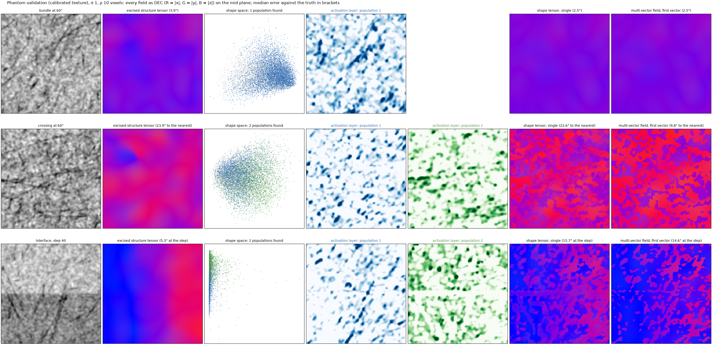

Validation on phantoms¶
Three phantoms with truth, at 20 µm voxels, 192³ blocks with 32 voxels of context, three seeds each; every field
at σ 1, ρ 10 voxels. The texture is the one matched to the real HiP-CT crop: 20° of fibre dispersion within a
population and half the fibre darkening (shapetensor stats). The structure tensor (plain and excised) is scored
against the shape tensor's single field and the first vector of its multi-vector field.
shapetensor validate --out validation # validation.json, validation_calibrated.pngThe shape pipeline is calibrated once on twelve single bundles at 15° steps of orientation (a phantom block has one or two orientations, too few to calibrate on itself; a real block has them all).
- bundle — one population at 60°: the clear-tissue floor.
- crossing — two populations at 60°, equal density, interdigitated at the fascicle scale.
- interface — one population crossing a tissue step of 40 grey levels, at 90°, 60° and 30° to it in three bands.

Each row is one phantom in the package's standard layout: the image, the excised structure tensor, the shape space
with the populations found in it, one activation layer per population, the shape tensor's single field and the
first vector of its multi-vector field, every field as plain DEC at every voxel, with each field's median error
against the truth in its title.
results/validation.json has every seed and every band.
What it shows¶
- On the bundle both fields are within 4° of the truth; the shape tensor is the closer (2.4° against 3.9°), because the activation weighting discounts the voxels between fibres.
- At the crossing the structure tensor reports the bisector (24° from either population, 10% of voxels within 15°). The pipeline finds two populations on every seed. Its single field is also near the bisector (23°), as a merged tensor must be, but the first vector of the multi-vector field is 11.6° from the nearest population with 55% of voxels within 15°: at each voxel the stronger population's own tensor. The pair is not resolved per voxel (both vectors within 15° at 1% of voxels): with 20° of dispersion within each population the two activation layers overlap, and the second vector is indicative only.
- At the interface the plain structure tensor is dragged 35° into the step within 0.1 mm of it; the excision
removes this (6°), and the pipeline inherits the excision. The shape tensor is nonetheless the noisier field here
(17° against 6°, in every band): three bands at different angles to the step are read as one or two
populations, and their activation weighting cannot sharpen three directions. Where a block holds one coherent
direction the pipeline matches the excised tensor; where it holds several, the population count per region is
the lever, not the weights (
notes/results_log.md§27).
What to take from it¶
- The excision is the remedy for interfaces; it is in the baseline and inside every population tensor.
- At a crossing, use the multi-vector field's first vector where the two populations are of different strength, and treat the second as indicative. The single field is a merged tensor and reports the bisector like the structure tensor.
- Tight, coherent bundles (8° dispersion, the
coherentsetting ofshapetensor validate --settings coherent) are separated per voxel and were the earlier validation's headline; they are not the regime of the HiP-CT crop, so they are no longer the default and are not shown here. - On the real block, where orientations vary smoothly, the single field agrees with the excised tensor to 7° where the tensor is confident (real data).